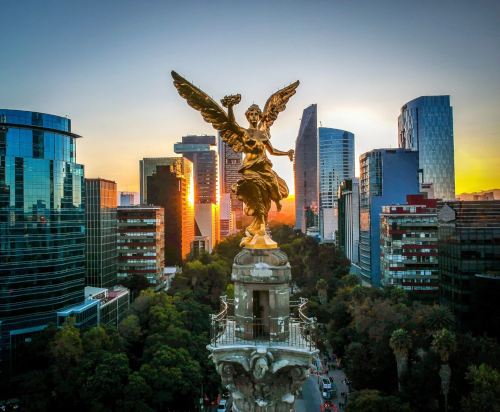

Conoce un poco mejor los lugares de los que proceden tus colegas en línea
Todo ser humano es un artista, un ser de la libertad, llamado a participar en la transformación y reforma de las condiciones, el pensamiento y las estructuras que conforman e influyen en nuestras vidas.
— Joseph Beuys
La ciudad de TripleTen ha reunido a profesionales de diferentes rincones del mundo. Hoy, la Galería de Arte TripleTen se enorgullece de presentar historias y fotografías de algunas de las personas que dedican su tiempo y esfuerzo a hacer que los futuros profesionales de la tecnología de esta ciudad se sientan como en casa. Cada uno de nosotros tiene una historia única sobre el lugar del que procede. No dudes en añadir a nuestra colección tu propia historia y una obra de arte visual dedicada a tu ciudad natal. No importa de dónde seas, nos alegra que seas nuestro vecino.


-
Cricieth, Gales
ARTISTAS
Steffan Warren, editor jefe
Kseniya Glagoleva, gerente de proyectos

Las ruinas medievales del castillo de Cricieth dominan la ciudad desde una roca que extiende sobre el mar. Se cree que fue construido por Llewelyn el Grande en el S. XIII. 800 años después, la autodenominada Perla de Gales en las costas de Snowdonia, se ha convertido en un popular destino turístico durante los meses de verano.
A pocos pasos de camino al castillo, puedes disfrutar de los mejores helados del mundo en Cadwalader's, cuyo ingrediente secreto se rumorea que son algas marinas de la localidad. Otra cosa por la que es famosa Cricieth es por haber ganado el premio *Gales en flor* durante cinco años seguidos por sus espectaculares muestras florales alrededor de la ciudad. También vio nacer a David Lloyd George, el único galés que ha sido Primer Ministro del Reino Unido.
-
Berea, EE. UU.
ARTISTAS
Travis Turner, autor y editor

Berea es una pequeña ciudad ubicada en la parte central de Kentucky. La ciudad está rodeada por hermosos bosques y campos. Es conocida como la capital de la artesanía del estado, y sus visitantes hallarán infinitas posibilidades para ir de compras: tiendas de joyas, velas y artículos de madera artesanales; galerías, talleres de vidrio y más. La ciudad celebra un festival anual que rinde tributo al "spoonbread", un platillo local hecho de pan de maíz y que se sirve con una cuchara de madera.
Aunque, probablemente es mejor conocida por su universidad. El Berea College fue fundado en 1855 y fue la primera universidad sureña integrada racialmente, así como la primera en ser coeducacional. Algo que en cierta manera la hace única, es que no cobra colegiatura: cada estudiante recibe una beca del 100%.
-
Muramvya, Burundi
ARTISTAS
Grevisse Kenguruka, editor técnico

Muramvya es una de las 18 provincias de Burundi. Durante la época del reino, Muramvya fue su capital; y en 2017, gracias a su paisaje cultural y natural, se añadió a la Lista provisional de patrimonio mundial de la UNESCO. Se encuentra ubicada en el centro de Burundi, entre las capitales política y económica del país.
Su clima es más bien frío durante la noche, pero durante el día, podrías pensar que estás en el paraíso. A sus 2,665 metros (8,743 ft) sobre el nivel del mar, el Monte Teza es uno de los lugares más fríos de la provincia. Pero es justo esa brisa fresca la que da pie a una de las más grandes plantaciones de té y café del país, y que representa la mayoría de las exportaciones de Burundi.
El Parque nacional de Kibira, una de las mayores reservas de vida silvestre para los simios, ocupa parte de cuatro provincias, incluyendo Muramvya. Este parque nacional se encuentra en las cúspides de las hermosas montañas de la Divisoria Congo-Nilo, cuyas alturas oscilan entre 1,550 y 2,660 metros. Está lleno de hermosa vegetación, y es una fuente para los diversos ríos y arroyos que proporcionan agua alrededor del país.
-
CDMX, México
ARTISTAS
Daniel Pérez, autor
La Ciudad de México (CDMX) es la capital del país y uno de los centros urbanos más grandes y diversos del mundo. Construida sobre lo que fue la antigua ciudad mexica de Tenochtitlan, conserva una profunda herencia histórica que convive con una vida moderna y dinámica. Su Centro Histórico, declarado Patrimonio Mundial por la UNESCO, alberga joyas arquitectónicas como la Catedral Metropolitana y el Templo Mayor, testigos de distintas etapas de su historia.
Ubicada en el Valle de México, a más de 2,200 metros sobre el nivel del mar, la ciudad goza de un clima templado durante gran parte del año, con noches frescas y días agradables. Sus amplios parques y áreas naturales, como el Bosque de Chapultepec, uno de los más grandes del hemisferio occidental, ofrecen un respiro verde en medio del ritmo acelerado de la metrópoli.
La CDMX es también un referente cultural y gastronómico. Museos de talla internacional, barrios llenos de identidad como Coyoacán, Roma y Xochimilco, así como una cocina que va desde los tradicionales tacos y tamales hasta propuestas de alta cocina, hacen de la ciudad un destino vibrante. Esta mezcla única de historia, cultura y creatividad convierte a la Ciudad de México en un lugar donde cada visita revela algo nuevo.